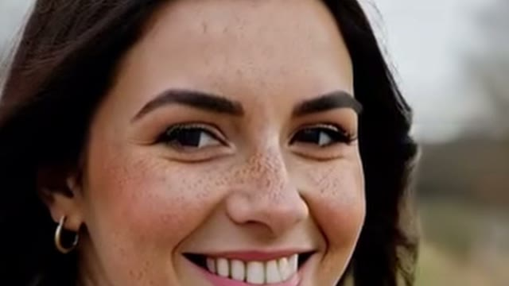
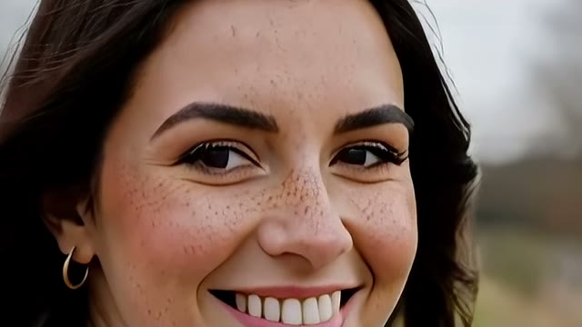
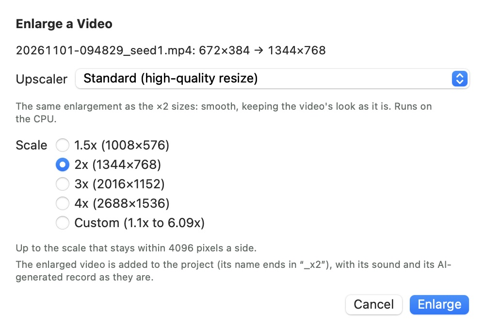
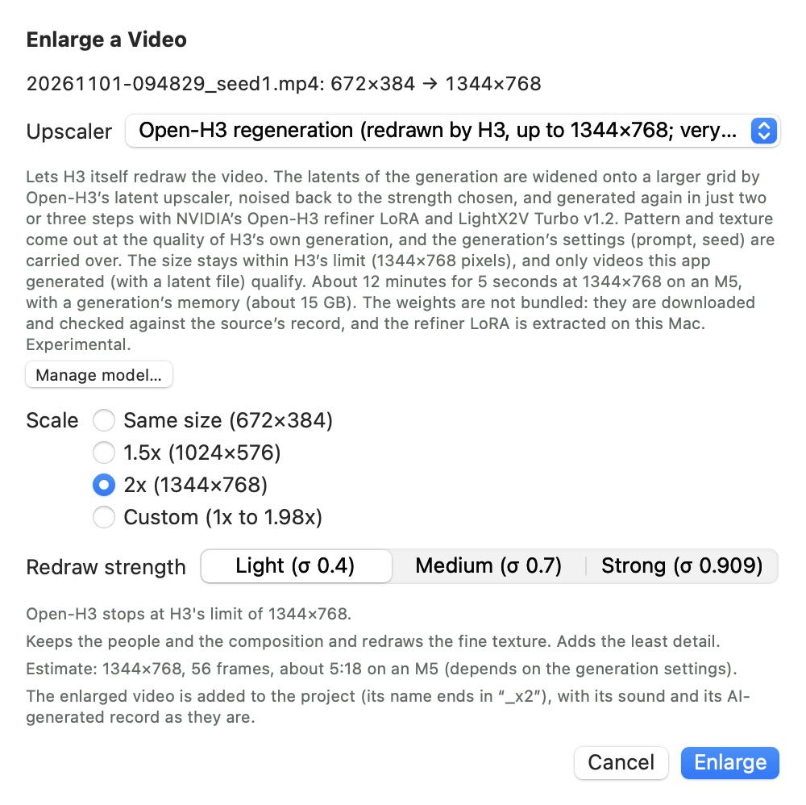

Enlarging videos
How to make a finished video larger afterwards, or redraw its fine detail at the same size. There are eight methods, and they differ most in speed and in how much they add. Compare the results first, and if you are still unsure, see Choosing a method. This page uses the labels of H3cApp with macOS set to English.
Compare the results
The same clip, enlarged 2x (672×384 to 1344×768) by each method, side by side. Choose a clip and a method for each side, then use Still for detail and Video for motion.


Motion is easier to compare at Quarter speed. Watch whether fine detail in the hair or background shimmers as it moves, and whether a face changes partway through. Whether it looks natural depends on your eye and the footage, so try a short clip of your own as well.
| Method | Time | Change between frames |
|---|---|---|
| Standard | 2 s | 2.10 |
| MetalFX | 2 s | 2.39 |
| Real-ESRGAN General | 4 s | 1.77 |
| Real-ESRGAN Anime | 4 s | 1.83 |
| SwiftVR | 18 s | 1.86 |
| SwiftVR, restore at 4x then shrink | about 1 min | 1.91 |
| SeedVR2 | about 5 min | 2.79 |
| Open-H3 Light | about 6 min | 2.19 |
| Open-H3 Medium | about 6 min | 2.87 |
| Open-H3 Strong | about 7 min 30 s | 4.16 |
Every clip was generated in H3cApp from text alone. Each result is from a single run, and the same 640×360 area is cropped from each. The videos are recompressed for this page, so they show less fine grain than the real output.
Enlarging a video, step by step
This works on other video files too, not only on videos made in H3cApp. Every method runs inside the app, with no other program.
- Choose the video. There are three ways in.
- The video on screen: Video → Enlarge the Video Shown… in the menu bar
- A project video: in Project Videos…, the video's More → Make an Enlarged Copy…
- Any other video file: Video → Enlarge a Video File…
- Choose a method from the Upscaler menu. A description appears below it. A method that needs its model set up is prepared here with Set up model… (steps).
- Choose the Scale. Only the scales this method can use are listed, each with the size it makes.
- Press Enlarge. A project video gets a new copy in the project, its name ending in the scale (
_x2for 2x). For a video outside a project, you choose where to save next. - Wait for it to finish. Progress appears at the top of the window, and Cancel stops it at any time. For a video outside a project, Show in Finder in the final message opens the saved file's location.

Try a new method on a short video first. SeedVR2 and Open-H3 take minutes even for 5 seconds of video. Which result you prefer depends on the footage, so compare on a short clip before using a method on a long video.
Choosing a method
Choose by what you want to do. Methods higher in the table finish sooner.
| What you want | Method |
|---|---|
| Make it larger right away, looking just the same | Standard |
| A little sharper than Standard | MetalFX |
| Add detail to live action or general footage in a short time | Real-ESRGAN General |
| Crisper lines and colors in anime or illustration | Real-ESRGAN Anime |
| Bring back the texture of skin, hair and fabric | SwiftVR |
| Clean up a close-up without changing eyes or brows | SwiftVR, restore at 4x then shrink |
| Clean up detail without changing the size (Same size) | SwiftVR, restore at 4x then shrink (try it first) |
| Put per-frame detail such as eyelashes and skin texture first | SeedVR2 |
| Redraw pattern and texture at the quality of H3's own generation | Open-H3 regeneration |
The more a method adds, the likelier something appears that was not in the source. If a face must not change, choose Standard or "SwiftVR, restore at 4x then shrink".
Choosing the scale
The sheet lists only the scales this method can use on this video, each with the size it makes. If 3x or 4x is missing, the video has reached one of the limits below.
- 1.5x, 2x, 3x, 4x: those that fit are listed.
- Custom: type a scale with up to two decimal places. The buttons beside it change it by 0.1, and the size it makes is shown as you go. The range is shown on the Custom line.
- Same size: keeps the size and redraws only the fine detail. The AI methods offer it; Standard and MetalFX do not, because they would change almost nothing.
| Method | Scale range | Size limit |
|---|---|---|
| Standard, MetalFX | 1.1x to 8x | 4096 pixels a side |
| Real-ESRGAN (General, Anime) | 1x to 4x | 4096 pixels a side |
| SwiftVR (both methods), SeedVR2 | 1x to 4x | 4096 pixels a side, and what fits this Mac's GPU memory |
| Open-H3 regeneration | 1x to 4x | 1344×768 pixels (H3's limit) |
Open-H3 rounds the size to multiples of 32 and shrinks it along the aspect ratio until it fits the limit. For example, 672×384 at 2x is exactly 1344×768, and 960×544 becomes 1344×768 at any scale. A video already at the limit offers only Same size.
Using each method
Standard (high-quality resize)
The same high-quality resampling as the size menu's 2x upscaling. It enlarges the look as it is, so it stays closest to the source and flickers little. Use it as your reference when unsure. No setup is needed.
MetalFX (edge-preserving)
Apple's MetalFX enlarges while following the edges, a little crisper than Standard. No setup is needed.
Real-ESRGAN General (AI upscaling)
An AI fills in detail as it enlarges. It suits live action and general footage. Because it adds detail, patterns that were not in the source can appear. The weights are in the app, so it works right away.
Real-ESRGAN Anime (AI upscaling)
Makes lines and areas of color crisp. It suits anime and illustration, and takes about half the time of General. It works right away.
SwiftVR (AI video super-resolution)
An AI that looks at the whole video draws texture and detail back in as it enlarges. Use it to bring back the texture of skin, hair and fabric. It adds a lot, and lines can appear along edges. It needs model setup the first time.
SwiftVR, restore at 4x then shrink (gentler texture)
The same model restores at 4x, and the result is brought down to the size you chose. It is less likely to redraw eyes and brows, and the texture is gentler and truer to the source. Try this one first at Same size too. It takes about five times as long as SwiftVR and shares SwiftVR's model.
When the 4x stage does not fit the GPU's memory, it is restored in tiles automatically. When 4x would exceed 4096 pixels a side, it steps down to 3x, then 2x. Choosing 4x gives the same result as SwiftVR.
SeedVR2 (AI super-resolution, detail first; very slow, experimental)
Redraws one frame at a time. Eyelashes, skin texture and fabric come out stronger than with SwiftVR, but the result can drift from the source, and a face's look may change. Moiré can appear in fur, and flicker can increase. Each frame takes seconds. It needs model setup the first time.
Open-H3 regeneration (redrawn by H3, up to 1344×768; very slow, experimental)
Less an enlargement than H3 itself redrawing the video on a larger canvas. Where SeedVR2 draws one frame at a time, this redraws all frames together. How natural the motion looks varies by video, so compare before you choose. It reuses the prompt and seed of the generation, so there is nothing to type. You can choose the redraw strength.
Only some videos qualify:
- Project videos generated in this app (a latent file,
.h3lt, must sit beside the video; videos from before v0.5.0 and imported videos do not qualify). - For a joined video, use it on each clip before joining.
- For an enlarged video, regenerate from the video it was made from.
It needs model setup the first time.
Setting up the AI models
The weights of SwiftVR, SeedVR2 and Open-H3 are not in the app, so each is set up once. Standard, MetalFX and Real-ESRGAN need no setup.
- Choose the method in the Upscaler menu. If it is not set up, an orange note and a Set up model… button appear below the description. Enlarge stays off until it is.
- Press Set up model…. You can also open it from Model Manager → Upscaling models.
- Read the license notice and confirm. The download starts once you confirm.
- Wait for it to finish. The files are checked by SHA-256 against the source's record, and any conversion or extraction follows on its own. When it ends, you can enlarge with that method.
| Method | Download | After setup |
|---|---|---|
| SwiftVR (shared by both methods) | About 20 GB; resumes if interrupted | Converted for this Mac (about 4.6 GB on an M5, about 8.9 GB on others). After conversion, Delete Original Weights… removes the original 20 GB. Converting again later, for example after an app update, then needs a new download |
| SeedVR2 | About 4.7 GB; resumes if interrupted | No conversion |
| Open-H3 regeneration | Merged LoRA about 12.5 GB, and latent upscaler about 0.7 GB | Only the refiner part (about 4.2 GB) is extracted on this Mac, and the merged LoRA is deleted. LightX2V Turbo v1.2 is reused from the LoRA folder if the same version is there |
Check your free disk space first. Until conversion or extraction ends, both the downloaded files and the new ones need room.
Choosing Open-H3's strength
With Open-H3 regeneration chosen, Redraw strength appears below the scale. It sets how far the video is noised back before it is redrawn: the stronger, the more is added and the further the result moves from the source. The sheet returns to Light each time it opens.
| Strength | Result | Use it when |
|---|---|---|
| Light (σ 0.4), the default | Keeps the people and the composition and redraws the fine texture. Adds the least detail | You want the same video at higher quality |
| Medium (σ 0.7) | Keeps the composition, but expressions and faces can change | A face may change a little and you want more added |
| Strong (σ 0.909) | Adds the most. It can become a different person or picture, and anime can turn into live action | You do not mind leaving the source behind. It takes about 1.3 times as long |

Results vary by video even at the same strength, so it is safest to try a short clip, starting from Light. The strength you chose is kept in the video's record.
Time and memory
Measured on an M5 Mac with 24 GB. On a Mac without the M5's tensor units, SeedVR2 takes several times as long.
| Method | Time |
|---|---|
| Standard, MetalFX | A few seconds |
| Real-ESRGAN General | About 0.08 s per frame at 800×544, about 0.32 s at 1620×1080 |
| Real-ESRGAN Anime | About 0.05 s per frame at 800×544, about 0.18 s at 1620×1080 |
| SwiftVR | 5 s of 960×544 at 2x: about 40 seconds |
| SwiftVR, restore at 4x then shrink | 5 s of 544×960 at 2x: about 4 minutes |
| SeedVR2 | 5 s of 672×384 at 2x: about 8 minutes (about 10 GB of GPU memory). 5 s of 960×544 at 2x: about 21 minutes (about 13 GB) |
| Open-H3 regeneration | 56 frames of 672×384 at 2x: about 4 to 5 minutes at Light, about 5.5 to 7 minutes at Strong. 5 s at 1344×768 takes about 12 minutes at Strong (memory as in generation, about 15 GB) |
For Open-H3, the sheet shows an estimate for this video and strength. SwiftVR, SeedVR2 and Open-H3 take the whole GPU, so they cannot run during generation, cache building or a video import. Enlarge once those finish.
After enlarging
- Sound and records: the sound and the file's AI-generated information stay as they were.
- The original: the original video stays as it is. You cannot save over the original itself.
- Saving: the file is replaced only after writing ends, so a failure or a cancel never removes a file already at the destination.
- Continuing: an enlarged video can be continued like any other. The continuation is made at the original video's size, then enlarged the same way at the same scale (and, for Open-H3, the same strength). Join and Export joins the enlarged videos. An enlarged copy of an enlarged video cannot be continued.
- Joined videos: joined videos can be enlarged too (except with Open-H3).
If something goes wrong
| What happens | What to check |
|---|---|
| Enlarge can't be pressed | The model is not set up, a generation or import is running, or the custom scale is out of range. The reason appears below the description or the scale |
| 3x or 4x is not listed | A limit was reached: 4096 pixels a side, GPU memory, or Open-H3's 1344×768. The limit is shown below the scale. Choose a smaller scale, or enlarge with Standard |
| "This upscaler can't enlarge this video." | No scale fits this Mac's memory or the other limits. Choose another method |
| Open-H3 says the video's latent file (.h3lt) is missing | The video is from before v0.5.0, or its latent file is gone. Open-H3 can't be used; choose another method |
| "Open-H3 regeneration works only on project videos (with a latent file)." | You opened a file outside a project. Open it again from the project video's More menu |
| Open-H3 says the frame counts differ | This is a joined video. Regenerate each clip before joining |
| A face or eyes changed | With Open-H3, go down to Light. With SeedVR2 or SwiftVR, try "SwiftVR, restore at 4x then shrink" |
| A pattern appeared that was not in the source | Real-ESRGAN or SwiftVR added it. Change to "SwiftVR, restore at 4x then shrink" or Standard |
| Flicker increased | This can happen with SeedVR2 or SwiftVR. Try "SwiftVR, restore at 4x then shrink": in a same-size comparison it had less flicker than the source in five videos of six |
| It takes too long | Press Cancel, then lower the scale or choose a faster method. A file already at the destination is not removed |
If that does not solve it, see Troubleshooting or Issues.
Weights and licenses
The weights and licenses differ by method. The setup screen shows the license notice and text. Which terms apply to your use is for you to judge.
- Real-ESRGAN: the trained weights (BSD-3-Clause) are in the app.
- SwiftVR: the weights are not in the app. They are downloaded from the revision whose model card declared Apache License 2.0, and checked by SHA-256.
- SeedVR2: the weights are not in the app. The 8-bit MLX export of SeedVR2-3B, which ByteDance Seed released under Apache License 2.0, is downloaded from a pinned revision and checked by SHA-256.
- Open-H3 regeneration: the weights are not in the app. The MiniMax H3 Community License applies to the refiner LoRA.
See also Enlarging afterwards in the guide and Licenses.